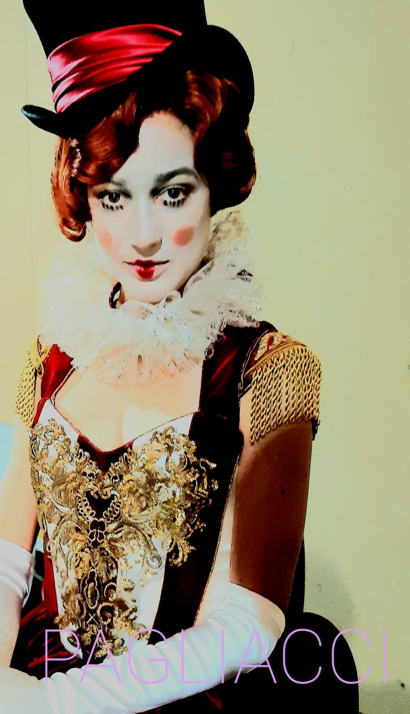

About
Me

Angela Buscemi. Costumista.
Inizia la sua attività teatrale disegnando costumi per diversi spettacoli d'Opera al Teatro Vittorio Emanuele di Messina: “Rita” di Donizetti (1995), “Cavalleria Rusticana” e “Pagliacci” (1997), “Norma” di Bellini (1998), “La Sonnambula” di Bellini, regia di Francesco Calogero; “Don Giovanni” (2001) e “Così Fan Tutte” (2002) di Mozart, regia di Francesco Torrigiani.
Ha firmato i costumi per la prima messa in scena italiana di “My Fair Lady” di Alan Jay Lerner e Frederick Loewe (2001), diretta da Massimo Romeo Piparo, ricevendo una candidatura al premio IMTA per i migliori costumi.
L'incontro con il regista Giorgio Barberio Corsetti ha portato alla creazione di spettacoli prestigiosi sia in Italia che all'estero. Tra questi spiccano: “La Pietra del Paragone” di Gioacchino Rossini al Teatro Regio di Parma e al Théâtre du Châtelet di Parigi (2014); “Macbeth” di Giuseppe Verdi al Teatro alla Scala di Milano (2013); “La Belle Hélène” di Offenbach al Théâtre du Châtelet di Parigi (2015); e “Don Carlos” di Giuseppe Verdi al Teatro Mariinsky (2012).
Collabora con Cristian Taraborrelli, creando i costumi per vari spettacoli teatrali e opere liriche da lui dirette: “Il Colore del Sole”, su libretto di Andrea Camilleri e musica di Lucio Gregoretti, al Teatro Comunale “Luciano Pavarotti” di Modena (2017); “La Jura” di Gavino Gabriel al Teatro Lirico di Cagliari (2015); “La Sonnambula” di Vincenzo Bellini al Teatro delle Muse di Ancona (2019); “I Pagliacci” di Ruggero Leoncavallo al Teatro Carlo Felice di Genova, in collaborazione con Rai Cultura, nel 2021.
Per la regia di Stefano Vizioli crea i costumi per “La Rondine” di Giacomo Puccini, febbraio 2024, Teatro Filarmonico di Verona (coproduzione Teatro Coccia di Novara).
Contact us
Per informazioni e collaborazioni compila il modulo: si aprirà il tuo programma di posta con il messaggio già pronto.